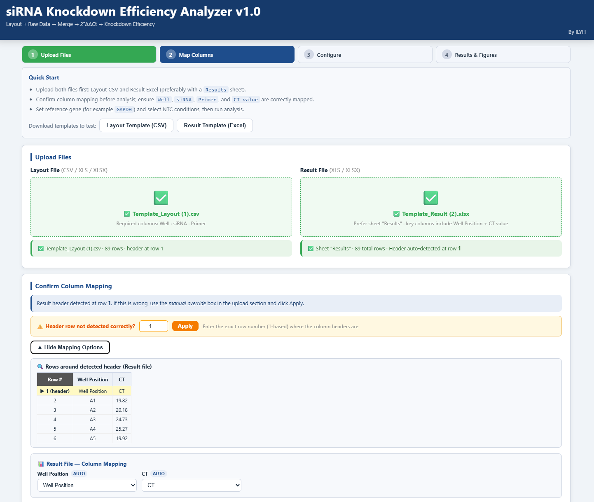
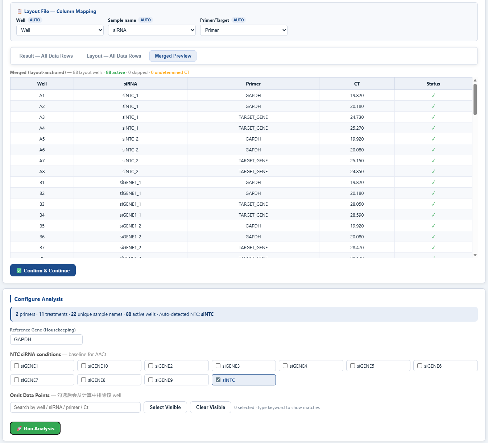
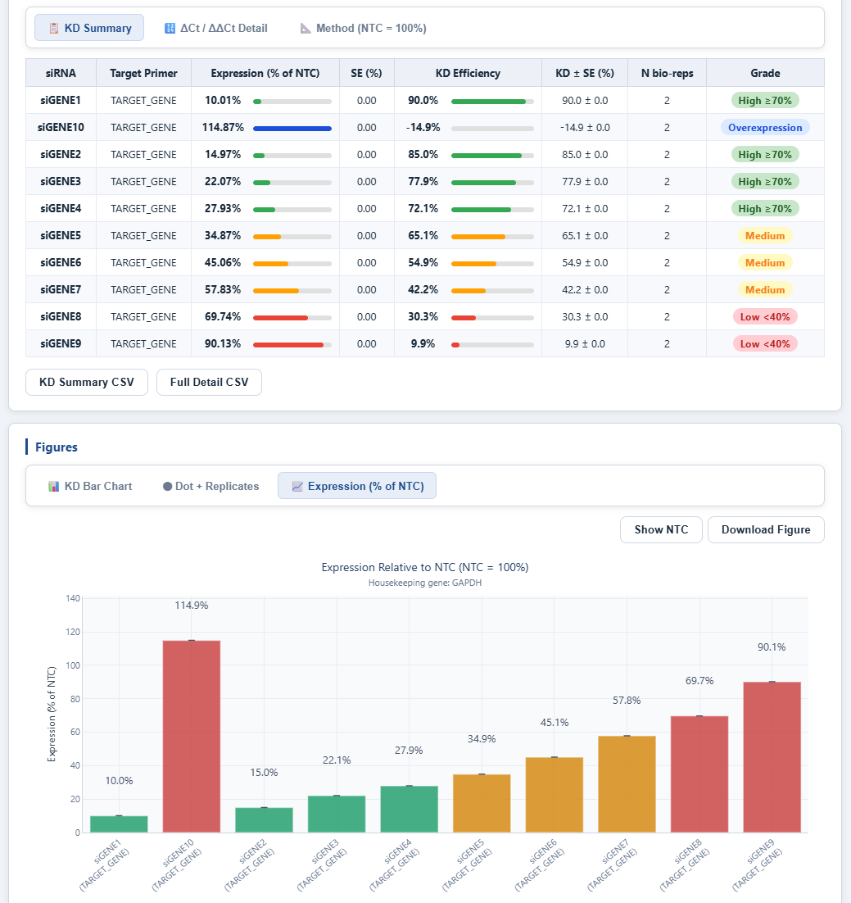

1How it works
Step 1
Upload qPCR result file
Drag an Excel/CSV export from your instrument. The tool auto-detects column headers (Sample, Target, Cт, Cq).
Step 2
Confirm reference gene & control group
Pick one or more housekeeping genes (e.g. GAPDH, ACTB) and the control group used as denominator for ΔΔCt.
Step 3
Review normalized values
Inspect ΔCt, ΔΔCt, and fold-change tables side by side; outliers are flagged automatically.
Step 4
Plot & export
Customize bar plot, then export TSV / PNG / chart-ready Prism block for GraphPad Prism XY or Grouped tables.
2Preview
Drag-and-drop input
Accepts native Excel exports from QuantStudio Design & Analysis software, Bio-Rad CFX Maestro, and generic CSV. Multiple files merge automatically.

Reference gene & group setup
Select housekeeping gene(s), assign control group, mark technical replicates. The interface previews the parsed plate map alongside the configuration panel.

Results, plotting & export
Per-target bar charts with replicate dots and error bars; Y-axis scale and color theme are configurable inline. One-click export to Prism Grouped table layout, TSV and PNG — replicate structure is preserved so error bars regenerate correctly inside Prism.
